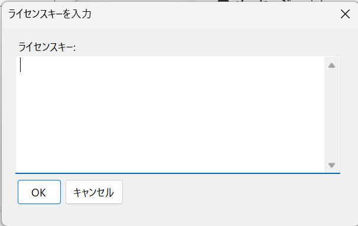

NeUライセンスマネージャー 利用マニュアル
| 項目 | バージョン／発行日 |
|---|---|
| 本マニュアル | v1.0.1 |
| NeUライセンスマネージャー | v1.0.1 |
| 対応ExBrainSDK | v3.2.0 |
| 発行日 | 2026年8月31日 |
1. はじめに
NeUライセンスマネージャーは、ExBrainSDKを利用するためのライセンスをWindows PC上で管理するアプリケーションです。主に次の操作を行えます。
- ライセンスの新規有効化
- インストール済みライセンスの確認
- ライセンス情報の再読み込みと再有効化
- ライセンスの無効化
- アプリケーション開発者向けリリースライセンスの作成
ExBrainSDKを使用するには、原則として有効なライセンスが必要です。ライセンスが有効でない場合、SDKの初期化時またはライセンスが必要な機能の実行時にエラーが返されます。
外部開発者向けの「リリースライセンス パッケージングガイド」も併せて提供しています。
2. 動作環境と事前準備
- 対応OS：Windows 10またはWindows 11（64ビット）
- インターネット接続：有効化、再有効化、無効化、リリースライセンス作成時に必要
- 管理者権限：インストール、アンインストール、PC全体にインストールされたリリースライセンスの無効化時に必要
- ライセンスキー：NeUから発行されたもの
Note
v1.0.1では、Windowsのコンピューター名に日本語などの非ASCII文字が含まれる環境でも、ライセンス認証を行えるようになりました。
3. インストールと起動
LicenseManager.msiを実行します。- Windowsの確認画面が表示された場合は、内容を確認してインストールを許可します。
- インストール完了後、Windowsのスタートメニューから「NeU License Manager」を起動します。
標準のインストール先は次のとおりです。
C:\Program Files\NeU\LicenseManager
新しいバージョンのインストーラーを実行すると、既存のNeUライセンスマネージャーが更新されます。
4. メイン画面
メイン画面には、インストール済みライセンスの一覧と操作ボタンが表示されます。
画面上部には「操作」メニューがあり、リリースライセンス作成機能を開けます。
各ライセンスには次の情報が表示されます。
| 表示項目 | 内容 |
|---|---|
| ライセンスタイプ | 開発者用、リリース用など、ライセンスの種類 |
| ライセンス名義 | ライセンスを使用する個人名または会社名 |
| GUID | ライセンス固有の識別子 |
| 有効期限 | 「無期限」または有効期限の日付 |
| 状態 | 現在のライセンス状態 |
| アプリハッシュ | リリースライセンスに登録されたアプリ情報（該当する場合のみ） |
主な状態表示は次のとおりです。
| 状態 | 意味 |
|---|---|
| 有効 | ライセンスを使用できます |
| 期限切れ | ライセンスの有効期限が終了しています |
| 破損 | 保存されているライセンス情報が破損しています |
| ハードウェア不一致 | ライセンスを有効化したPCと現在のPCが一致しません |
| アプリ検証失敗 | リリースライセンスに登録されたアプリと実際のアプリが一致しません |
| PC の時刻が正しくありません | PCの日時設定に問題があります |
| 不明 | 上記以外の状態です。括弧内に詳細な状態名が表示されます |
5. 新しいライセンスを有効化する
- メイン画面下部の「新しいライセンスを有効化」を選択します。
- NeUから発行されたライセンスキーを入力します。
- 「OK」を選択します。
- 「ライセンスの有効化に成功しました」と表示されたことを確認します。
- メイン画面にライセンスが表示され、状態が「有効」であることを確認します。

ライセンスキーの前後にある空白や改行は自動的に取り除かれます。キーの途中には空白や改行を入れないでください。有効化中はインターネット接続を切断しないでください。
新しく有効化した開発者ライセンスは、現在サインインしているWindowsユーザー用として保存されます。同じPCでも、別のWindowsユーザーからは表示または使用できません。
6. ライセンス情報を更新する
再読み込み
「再読み込み」を選択すると、PCに保存されているライセンス情報を読み直して画面を更新します。別のツールやインストーラーでライセンスを追加した場合や、表示を更新したい場合に使用します。
再有効化
対象ライセンスの「再有効化」を選択すると、ライセンスサーバーと通信してライセンス情報を更新します。次の場合に使用してください。
- NeUから有効期限や設定の変更連絡を受けた場合
- PCの日時を修正した後
- ライセンスの状態が想定と異なる場合
7. ライセンスを無効化する
PCを変更する場合や、別のPCで同じライセンスを使用する場合は、移行前のPCで次の操作を行います。
- 対象ライセンスの「無効化」を選択します。
- 「ライセンスを無効化しました」と表示されたことを確認します。
- 一覧から対象ライセンスが削除されたことを確認します。
無効化すると、PCに保存されたライセンスが削除され、ライセンスサーバー上の有効化状態も解除されます。再度有効化できるかどうかは、発行されたライセンスの条件によって異なります。
アプリケーションのインストーラーによってPC全体にインストールされたリリースライセンスを無効化する場合は、NeUライセンスマネージャーを管理者として起動する必要があります。通常は、リリースアプリケーションのインストーラーまたはアンインストーラーで管理してください。
Important
PCの交換、初期化、廃棄、またはOSの再インストールを行う前に、必ずライセンスを無効化してください。先にPCを利用できなくなった場合は、NeUの担当窓口へお問い合わせください。
8. リリースライセンスを作成する（アプリケーション開発者向け）
この機能は、NeUからリリースライセンス作成権限（CanSpawnLicenses）を付与された開発者ライセンスでのみ使用できます。
- 開発中のアプリケーションを、エンドユーザーと同じ方法でPCにインストールします。
- NeUライセンスマネージャーを起動します。
- 画面上部の「操作」から「リリースライセンス作成」を選択します。
- 使用する開発者ライセンスを選択します。
- ビルドフォルダーではなく、インストール済みのアプリケーションフォルダー、実行ファイル、またはスクリプトのエントリーポイントを選択します。
- 出力先フォルダーを選択して、リリースライセンスを作成します。
- 出力先に次のファイルが作成されたことを確認します。
NeUReleaseLicense_<ライセンスGUID>_instructions_and_license.txt
生成されたファイルには、リリースライセンス本文とインストーラーへの組み込み手順が含まれます。出荷するアプリケーションのファイルを変更した場合は、新しいリリースライセンスを作成してください。
詳しい組み込み方法については、「リリースライセンス パッケージングガイド」を参照してください。
9. トラブルシューティング
| 症状 | 確認事項と対応 |
|---|---|
| 有効化、再有効化、または無効化に失敗する | インターネット接続とPCの日時を確認し、再度実行してください |
| 「期限切れ」と表示される | ライセンスの有効期限を確認し、必要に応じてNeUへ更新を依頼してください |
| 「ハードウェア不一致」と表示される | 別のPCで有効化されていないか確認してください。移行元PCを利用できる場合は、移行元で無効化してから再度有効化してください |
| 「PC の時刻が正しくありません」と表示される | Windowsの日時とタイムゾーンを正しく設定し、「再有効化」を実行してください |
| 「アプリ検証失敗」と表示される | インストール済みアプリのファイルが、リリースライセンス作成時から変更されていないか確認してください |
| ライセンスが一覧に表示されない | 「再読み込み」を選択してください。改善しない場合は、ライセンスを再度有効化してください |
| リリースライセンスを作成できない | 対応する開発者ライセンスが有効であり、リリースライセンス作成権限が付与されていることを確認してください |
問題が解決しない場合は、次の情報をNeUの担当窓口へお知らせください。
- 使用しているNeUライセンスマネージャーのバージョン
- 使用しているExBrainSDKのバージョン
- 表示されたエラーメッセージ全文
- 問題が発生した操作と日時
- Windowsのバージョン
ライセンスキーや生成されたリリースライセンス本文は、公開チャンネルや不特定多数が閲覧できる場所へ投稿しないでください。
10. アンインストール
Windowsの「設定」から「アプリ」または「インストールされているアプリ」を開き、「NeU License Manager」をアンインストールします。
アンインストールしても、有効化済みライセンスは自動的に無効化されません。PCの移行や廃棄を行う場合は、アンインストール前に本アプリから対象ライセンスを無効化してください。